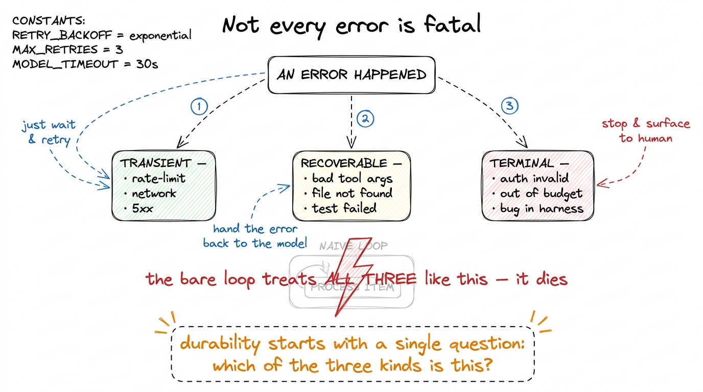
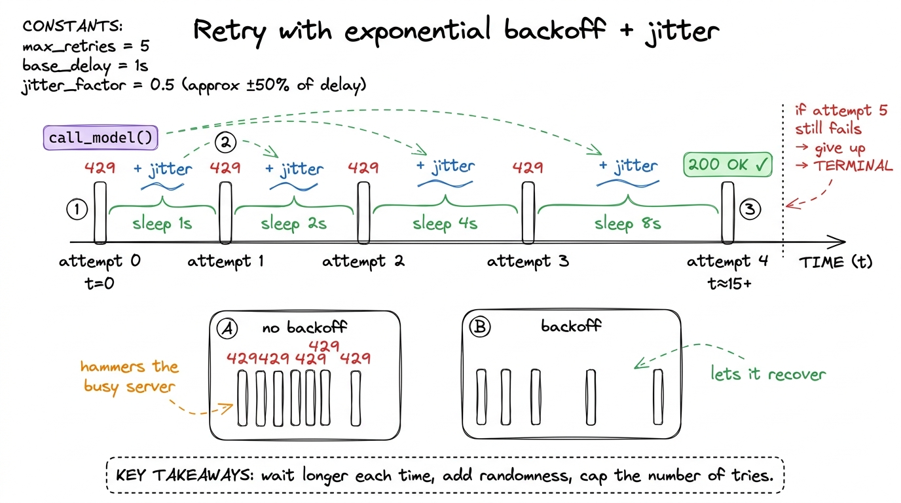
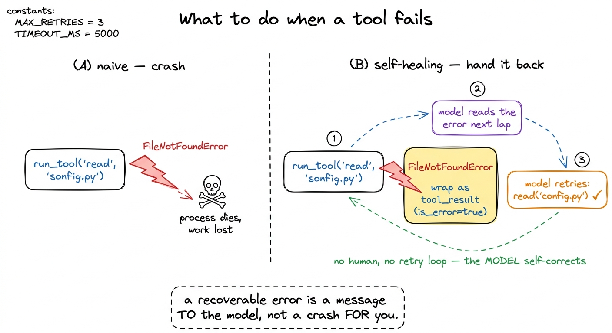
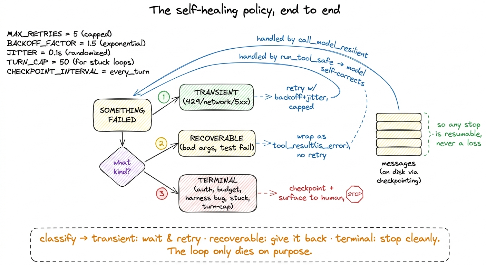

Self-healing loops: retries & failure classification
Run the bare harness from your first bare harness against a real task for more than a minute and you will meet the thing this chapter is about. The model asks for a tool, the loop runs it, and instead of a clean result you get an exception: a 429 rate-limit from the API, a connection reset because your wifi hiccuped, a 500 from a flaky service, or a tool that threw because the model passed a path that doesn't exist. In the fifteen-line loop, every one of those is fatal — the exception propagates, the process dies, and all the work so far is gone.
That is the wrong response to almost all of those errors. A rate-limit is not a crash; it is a "wait a second and ask again." A malformed tool argument is not a crash either; it is "tell the model what it got wrong and let it try." The whole art of this layer is refusing to treat every hiccup as the end of the world. A self-healing loop is one that classifies what just went wrong and responds proportionally — retry the transient, hand the recoverable back to the model, and only actually stop for the truly terminal.

figure rendering · Three kinds of failure, three different responses. The bare loop can'tThe one question that organizes everything: whose fault, and will it pass?
Before any code, get the taxonomy right, because the retry policy falls straight out of it. Every error a harness sees lands in one of three buckets.1 This maps closely to the "workflows vs. agents" distinction in Anthropic's Building Effective Agents — the more autonomy you give the loop, the more of your engineering budget goes into what happens when a step fails, not the happy path.
Transient failures are not your fault and will probably pass on their own: a 429 rate-limit, a 502/503/504 from the API gateway, a socket timeout, a dropped connection. The correct response is to do nothing but wait and try the exact same call again. These are the errors retries were invented for.
Recoverable failures are a real, meaningful outcome — the operation genuinely failed — but the model is the right party to fix it. The model asked to read a file that doesn't exist; it passed arguments that don't match the tool's schema; it ran a test suite and the tests failed. None of these are bugs in your harness. They are information the model needs, and the beautiful thing about an agent loop is that you already have a channel to deliver it: the tool_result. You feed the error back and let the model self-correct on the next lap.
Terminal failures are genuinely fatal and no amount of waiting or re-prompting will help: an invalid API key, an exhausted spending cap, a bug in your own harness code, a user who pressed Ctrl-C. For these the honest move is to stop, checkpoint what you have, and surface a clear message to a human.
The mistake the bare loop makes is collapsing all three into one behavior — die. The mistake beginners make when they first add error handling is the opposite: collapse all three into "retry forever," which turns a rate-limit into an infinite hammer and a real bug into a hang. Keeping the three buckets distinct is the entire game.
Fixing the transient case: retry with backoff
Start with the model call itself, because it is the single most failure-prone line in the harness — it crosses the network to a busy, rate-limited service on every lap. Wrap it so that transient errors are retried and everything else passes straight through.
import time, random
# errors the API/SDK raises that are worth retrying verbatim
TRANSIENT = (RateLimitError, APIConnectionError, InternalServerError) # 429, network, 5xx
def call_model_resilient(messages, tools, max_retries=5):
for attempt in range(max_retries):
try:
return call_model(messages, tools) # the plain call from Layer 1
except TRANSIENT as e:
if attempt == max_retries - 1:
raise # give up → becomes terminal
delay = min(2 ** attempt, 30) + random.uniform(0, 1) # backoff + jitter
time.sleep(delay) # 1s, 2s, 4s, 8s, 16s (+jitter)
# non-transient exceptions are NOT caught here — they propagate on purposeThree details carry all the weight. Exponential backoff — 2 ** attempt — means each retry waits longer than the last, so a service that is overloaded gets room to recover instead of being pounded at full speed. Jitter — the random fraction added on — desynchronizes many agents retrying at once, so they don't all wake up and stampede the API in the same millisecond.2 This is the "thundering herd" problem. Without jitter, a fleet of agents that all got rate-limited at 12:00:00 will all retry at exactly 12:00:01, reproduce the overload, and retry again in lockstep. A few hundred milliseconds of randomness breaks the synchronization. Real SDKs — including Anthropic's — already do bounded backoff-with-jitter internally, so in practice you are adding a second, coarser layer around theirs for the errors it gives up on. And the catch is narrow: only the exception types in TRANSIENT are retried. A programming error in your own tool code is not in that tuple, so it propagates immediately instead of being silently retried five times — which would just delay the crash by thirty seconds and hide the real cause.

figure rendering · Exponential backoff spaces retries further apart each time so an overlSwap call_model for call_model_resilient in the loop and a huge fraction of real-world crashes — the ones that were never really about your logic — simply stop happening. The loop shrugs off a rate-limit and keeps going.
Fixing the recoverable case: give the error back to the model
The transient wrapper handles the model call. Now handle the tool call, which fails for an entirely different reason and wants an entirely different response. When a tool throws, the worst thing you can do is crash; the second worst is silently swallow it. The right thing is to turn the failure into a tool_result and let the model read it.
def run_tool_safe(name, args):
try:
return {"ok": True, "output": run_tool(name, args)}
except Exception as e:
# the tool failed, but that's DATA for the model, not a crash for us
return {"ok": False, "output": f"ERROR: {type(e).__name__}: {e}"}Then, in the loop, both outcomes go back through the same channel — the model can't tell (and shouldn't care) whether a result came from success or from a caught exception; it just gets text describing what happened:
for block in reply.content:
if block.type == "tool_use":
result = run_tool_safe(block.name, block.input)
tool_results.append({
"type": "tool_result",
"tool_use_id": block.id,
"content": result["output"],
"is_error": not result["ok"], # the API lets you flag it as an error
})
messages.append({"role": "user", "content": tool_results})
# loop: next lap, the model SEES "ERROR: FileNotFoundError: no such file: sonfig.py"
# and typically fixes its own mistake — retries with the correct pathThis is the move that makes agents feel intelligent. Give the model the error verbatim and it will, remarkably often, fix itself: it typo'd sonfig.py, sees FileNotFoundError, and reads config.py on the next lap; it passed a bad flag to a command, sees the usage message, and corrects it; it ran the tests, sees three failures with stack traces, and edits the code to make them pass. This last one is the entire premise of a coding agent — a failed test is not an error to retry, it is a signal to iterate on, and the loop you already built delivers that signal for free.3 Sebastian Raschka's components of a coding agent makes this point sharply: the feedback loop is the agent. A model that can run its own code and read its own failures is doing a fundamentally different thing than one that writes code blind, and the difference lives entirely in whether your harness pipes the error back.
Notice what we did not do: we did not retry the tool ourselves. Reading a missing file five times gives you five identical FileNotFoundErrors. The retry logic for recoverable failures lives in the model's judgment, not in a for loop — which is exactly right, because only the model knows that the fix is a different path, not the same one again.

figure rendering · The naive loop dies on a bad tool argument. The self-healing loop wrapKnowing when to stop: the two guards that keep self-healing from becoming self-harm
Handing errors back to the model is powerful, and like everything powerful it has a failure mode: the model can get stuck — edit a file, run the test, watch it fail, edit again the same wrong way, fail again, forever. Retries with backoff have their cap built in (max_retries). The model-facing recovery loop needs its own guards, or "self-healing" quietly becomes "burn the budget re-trying the same broken idea." Two guards cover almost everything.
The first is a turn budget: a hard ceiling on how many laps the loop may take before it stops and reports.4 This is the other half of stop conditions — that chapter covers the normal exit (the model stops asking for tools); this is the abnormal one (the model won't stop, or keeps failing). Every production harness has both. Claude Code surfaces this to you as it works, and pi's loop carries an explicit step limit. Left unbounded, a stuck agent doesn't crash — which is arguably worse, because it silently spends money and time. The second is loop detection: notice when the last few turns are effectively identical — the same tool with the same arguments producing the same error — and break out, because a model repeating itself is a model that is not going to self-heal.
def run_agent(user_request, max_turns=40):
messages = [{"role": "user", "content": user_request}]
recent_errors = []
for turn in range(max_turns): # guard 1: turn budget
reply = call_model_resilient(messages, TOOLS) # transient retries handled inside
messages.append({"role": "assistant", "content": reply.content})
if reply.stop_reason != "tool_use":
return text_of(reply) # normal, healthy exit
tool_results, errored = [], False
for block in reply.content:
if block.type == "tool_use":
result = run_tool_safe(block.name, block.input)
errored = errored or not result["ok"]
tool_results.append({ "type": "tool_result",
"tool_use_id": block.id, "content": result["output"],
"is_error": not result["ok"] })
messages.append({"role": "user", "content": tool_results})
recent_errors = (recent_errors + [errored])[-4:] # guard 2: loop detection
if recent_errors == [True, True, True, True]: # four failing laps in a row
return "Halting: the agent is stuck failing the same step. " \
"Surfacing to a human with the transcript so far."
return f"Halting: hit the {max_turns}-turn budget without finishing."Both guards end the same way — a graceful, terminal stop with a clear message and the transcript intact, not an exception. That intactness is the bridge to the next chapter: because we built the loop on durable execution and checkpointing, a stop is never a loss. The state is on disk, a human can read exactly where the agent got stuck, adjust the request, and resume from the last good step instead of starting over.
The whole policy on one page
Step back and the design is just the three-bucket taxonomy turned into three behaviors, each living in a different place in the harness.

figure rendering · The complete policy: classify every failure, then retry it, hand it baTransient errors are caught low, right at the model call, and retried with capped backoff-and-jitter so a busy service gets to recover. Recoverable errors are caught at the tool boundary and handed straight back to the model as tool_results, letting it self-correct with no retry loop of ours — the mechanism that lets a coding agent iterate a test to green. Terminal errors — a dead credential, an exhausted budget, a stuck model, a blown turn cap — end the loop gracefully with a message and an intact checkpoint. The bare loop we started with had exactly one response to everything; now the loop only dies when it decides to, and everything short of that, it survives.
That is durability at the level of a single run. The next question is what happens when the process itself dies mid-lap — the power cuts, the container is evicted, someone kills the terminal. For that we need the run's entire state to already be on disk so a fresh process can pick up exactly where the old one fell over. That is durable execution and checkpointing, and it is what makes every "graceful stop" in this chapter actually recoverable.